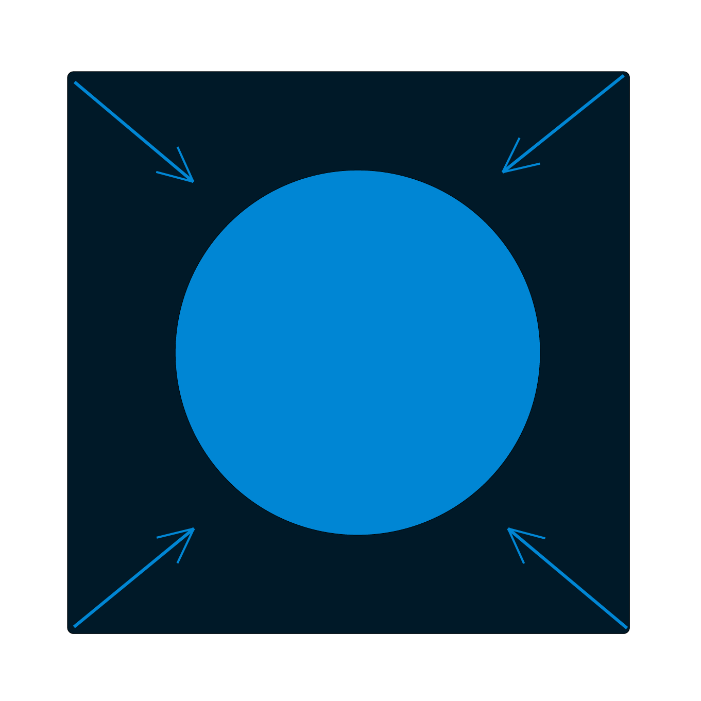
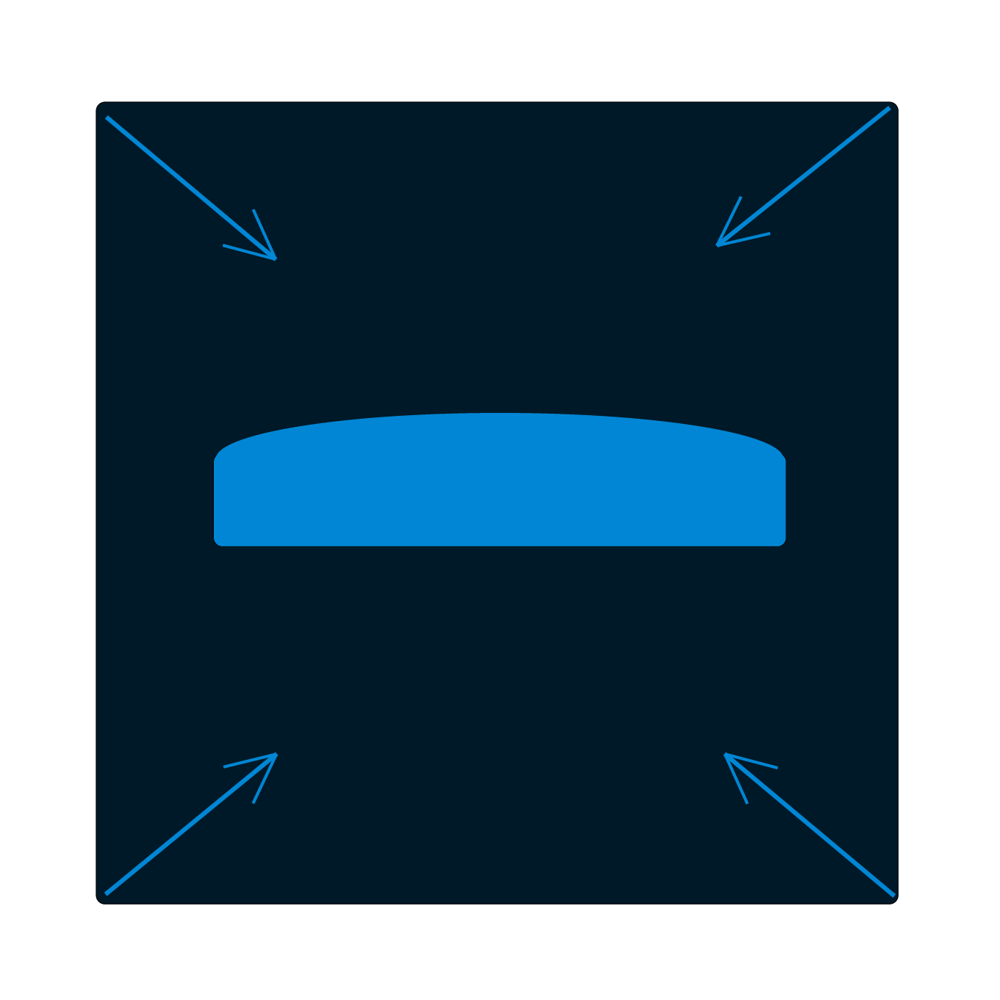
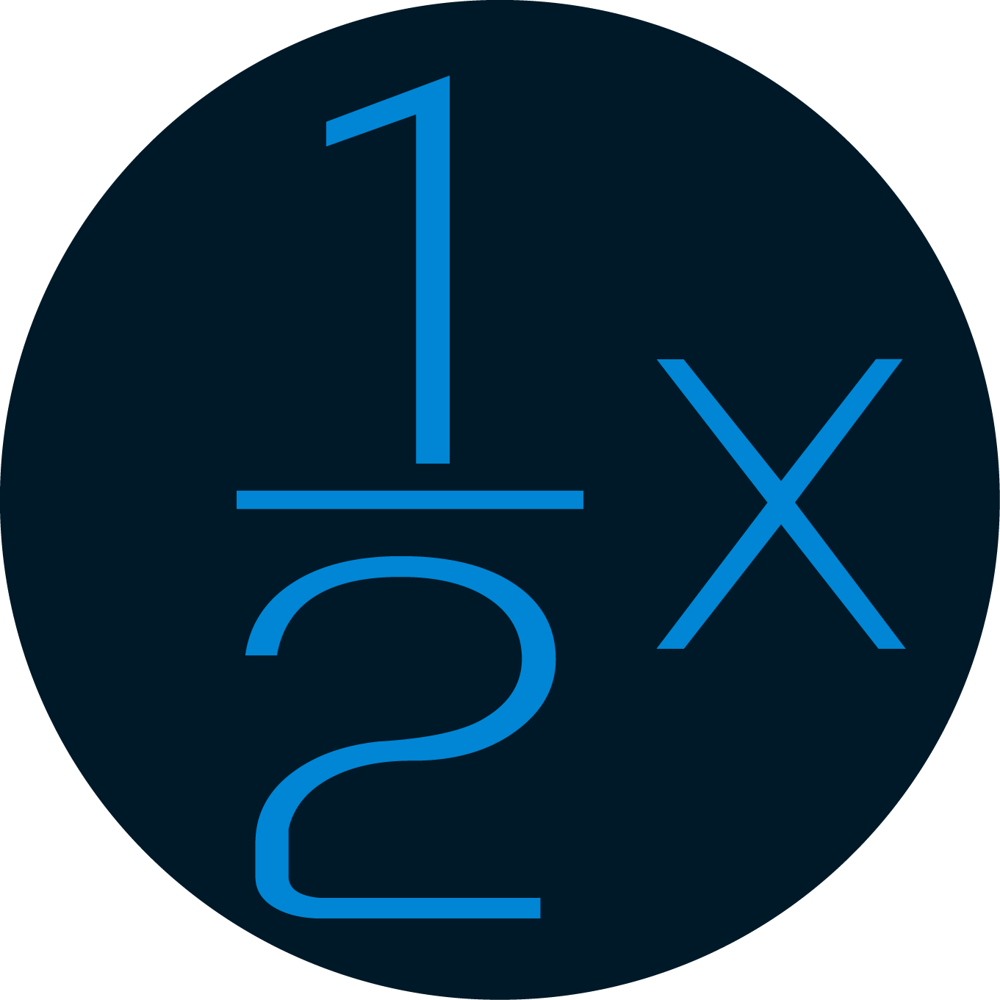

<div class="container-tutorial">
    <div class="parent-data-tutorial">
        <p>There are currently 3 power-downs in the game</p>
        <figure>
            
            <figcaption>An slower ball</figcaption>
        </figure>
        <figure>
            
            <figcaption>An smaller ball</figcaption>
        </figure>
        <figure>
            
            <figcaption>An smaller palet</figcaption>
        </figure>
        <p>This power-down is only available in Multiplayer</p>
        <figure>
            
            <figcaption>Your point will be multiplied by 0.5</figcaption>
        </figure>
    </div>
    <div class="padger-dots">
        <div class="ball"></div>
        <div class="ball ball-active"></div>
        <div class="ball"></div>
    </div>
</div>